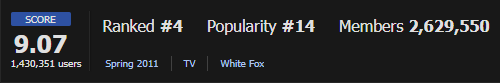
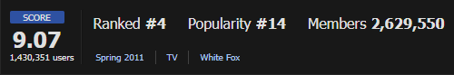

Steins;Gate
 


Steins;Gate, também conhecido como O MELHOR ANIME DO MUNDO. É baseado em uma visual novel que explora temas de viagem no tempo, física e mistério. A história acompanha Rintarou Okabe e seus amigos enquanto eles descobrem os segredos e consequências de manipular o tempo. Apesar de "pouco falado" está no ranking 4 global, de acordo com o MAL (my anime list) que é um site renomado para rating de anime, semelhante ao IMDb.